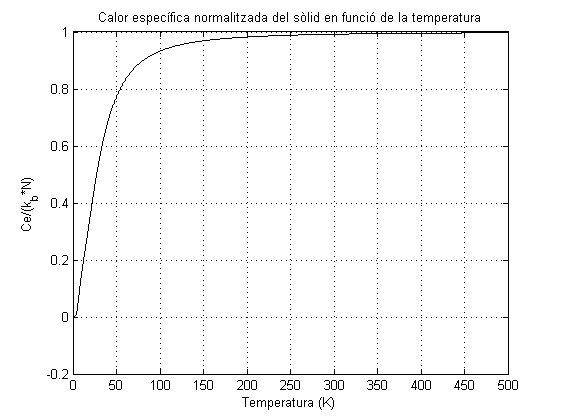

Estudi del model del sòlid d'Einstein i de Debye
Introducció històrica
L'estudi de la calor específica marca l'inici de la física de l'estat sòlid al segle XX.
La mecànica clàssica oferïa una justificació del valor de la calor específica, que
explicava que la calor específica fos independent de la temperatura, tal com
se'n deriva de la Llei de Dulong i Petit. Tanmateix, els experiments mostraven un comportament
anòmal a baixes temperatures, de manera que la capacitat calorífica en depenia i tendia a 0
al zero absolut. En canvi, per a temperatures altes la calor tendia a les prediccions de Dulong i Petit.
Fou el 1907 quan Einstein proposà una nova teoria que donava una explicació al comportament
de la calor específica per baixes tempertures, fent ús de les noves idees de la quantització de Planck.
Les prediccions d'aquest model, però, no eren del tot prou ajustades. Fou més tard, el 1912, quan Debye aprofitant
els treballs de Max Planck i Albert Einstein, millorà la teoria d'Einstein i obtingué una millor aproximació.
Aquest treball pretén fer un estudi grosso modo dels dos models (Einstein i Debye) per al cas d'una cadena
monoatòmica de N àtoms, tot fent una simulació dels moviments dels àtoms i el càlcul de la seva calor específica
fent servir diferents mètodes.
Comentaris inicials de l'estudi
Les simulacions d'aquest estudi estan fetes totes a partir de les dades d'una cadena de N àtoms de sodi (Na).
Així els valors de les constants que s'usen (paràmetre de xarxa, massa i Kel) són:
Massa
Paràmetre de xarxa
Com que el sodi es una cúbica interior, la distància d'enllaç és, doncs:
La velocitat del so al sodi, és:
A partir de la velocitat del sodi, podem trobar la constant d'elasticitat a partir de la expressió:
Com que al límit quan k→0, es té que:
A partir d'aquesta darrera expressió s'obté que la constant elàstica és:
Model d'Einstein
El model d'Einstein és un model que es fonamenta en dues hipòtesis:
-
Cada àtom és un oscil·lador harmònic independent de freqüència we .
-
Tots els àtoms oscil·len amb la mateixa freqüència.
El moviment dels àtoms es pot representar fàcilment desenvolupant un codi MATLAB®, que és basa
en el fet que el moviment dels àtoms serà un moviment oscil·latori de freqüència w, és a dir,
de la forma:
Es presenta a continuació la simulació del moviment dels àtoms en una cadena unidimensional de N àtoms:
 :
:
Vegeu el codi MATLAB® de la simulació (codi MATLAB®).
Càlcul de la Calor específica en el model d'Einstein
El càlcul de la calor específica en el cas del model d'Einstein, es fa tot tenint en compte que l'energia de la cadena serà N
vegades el valor mig de l'energia d'un oscil·lador hamrànic simple de freqüència we i amplitud Ai.
A partir dels valors propis de l'energia
I a partir de la funció de partició canònica, s'obté que el valor mig de l'energia ve donat per
Així l'energia de la cadena serà:
A partir d'aquí s'obté el valor de la calor específica derivant l'energia promig obtinguda respecte de T.
D'aquesta manera, s'obté la següent expressió analítica:
Si es fa el límit de la C quan T tendeix a infinit, s'obtenen tal com s'esperava els resultats que previa la Llei de Dulong i Petit.
A continuació, es mostra la representació gràfica de la C en funció de la T per al càlcul usant les expressions
analítiques anteriors i per al càlcul amb la derivada numèrica de l'energia.
 :
:
A continuació, es presenta la gràfica de l'error entre el càlcul amb la derivada numèrica i la derivada analítica.
:
Vegeu el codi MATLAB® del càlcul de la calor específica amb el model d'Einstein (codi MATLAB).
Aquests resultats, s'ajusten prou bé als resultats experimentals, malgrat no siguin exactes a baixes temperatures.
És per aquesta raó que el model d'Einsein marcà un abans i un després a la física de l'estat sòlid.
Model de Debye
El model de Debye és una millora del model d'Einstein pel que fa a la dependència de C respecte la temperatura a baixes
temperatures, que és proporcional a T3. En aquest cas, però, es tracten les vibracions com fonons en una caixa, a diferència
del model d'oscil·ladors harmònics simples independents del model d'Einstein. Així, gran part del desenvolupament teòric és idèntic.
Tan sols canvia el fet que en aquest cas hi ha diferents modes normals, la freqüència dels quals no és sempre la mateixa, sinó que
ve donada per la relació de dispersió:
El moviment dels àtoms de la cadena, separats per una distància a, en aquest cas, es pot representar desenvolupant un codi MATLAB®, que es basa
en el fet que el moviment dels àtoms serà un moviment oscil·latori amb contribucions de tots els modes normals (N modes normals, un per àtom), és a dir,
de la forma:
On l'amplitud ve donada a partir del fet que l'energia d'oscil·lació de cada mode és:
Es presenta a continuació la simulació del moviment dels àtoms en una cadena unidimensional de N àtoms:
 :
:
Es presenta a continuació la simulació del moviment dels àtoms en una cadena unidimensional de N àtoms, tot representant l'ona de les seves amplituds:
 :
:
Càlcul de la Calor específica en el model de Debye
El càlcul de la calor específica en el cas del model de Debye s'estudiarà a partir de tres mètodes numèrics diferents, l'essència del quals
acaba essent la mateixa.
Mètode de l'energia
Aquest mètode, de caire més numèric, es basa en el fet que l'energia de la cadena ve donada per la suma de l'energia dels diferents àtoms (cinètica + potencial).
on xi ve donada per la part real de l'exponencial anterior, i vi n'és la derivada, és a dir:
De fet, el valor de l'energia, pel fet de ser l'energia de diferents oscil·ladors, acaba essent independent del temps i la fase,
de manera que no cal calcular-la a tots els instants.
Sabent l'expressió de l'Energia, podem desenvolupar ara els dos mètodes:
El primer es basa en fer una derivada numèrica per molts diferencials de temperatura (dT) de l'expressió anterior, mentre que el segon deriva analíticament l'expressió de l'energia
i calcula el valor de C a partir de les expressions analítiques.
Mètode numèric
Fent servir el mètode numèric obtenim la següent gràfica de la C.
:
Vegeu el codi MATLAB® del càlcul de la calor específica amb el mètode numèric (codi MATLAB).
Mètode Analític
El mètode analític es basa en derivar directament l'expressió de l'energia de la cadena. L'expressió que s'obté és doncs:
Les expressions de les derivades de xi i vi són, respectivament:
Les expressions analítiques per les derivades respecte la temperatura de l'amplitud i l'energia de cada mode són:
A continuació, mostrem la C representada en funció de T obtinguda numèricament aplicant les anteirors expressions analítiques.
 :
:
Vegeu el codi MATLAB® del càlcul de la calor específica amb el mètode analític (codi MATLAB).
Mètode directe
Aquest mètode, de caire més analític, es basa en el fet que l'energia de la cadena ve donada també per la suma de l'energia dels diferents oscil·ladors
dels modes normals.
A partir d'aquí s'en troba la calor específica derivant respecte de T i s'obté:
Si es fa el límit de la C quan T tendeix a infinit, s'obtenen tal com s'esperava els resultats que previa la Llei de Dulong i Petit.
A continuació, es mostra la representació gràfica de la C en funció de la T.
:
Vegeu el codi MATLAB® que desenvolupa el mètode directe (codi MATLAB).
Discussió model de Debye
El model de Debye aconsegueix ajustar-se a temperatures baixes a la dependència experimental a T3 i a temperatures altes segueix
complint les prediccions de la Llei de Dulong i Petit. Tanmateix, ofereix problemes pel que fa a temperatures mitjanes. Així mateix, el model
encerta el fet que la major part de les contribucions a C són degudes a les vibracions àtomiques.
Tanmateix és un model lleugerament poc rigurós i presenta algunes imperfeccions. Per aquesta raó, el model de Debye fou succeït per d'altres
models que van permetre un estudi més acurat de l'estructura interna i el comportament dels sòlids.
Comparativa Debye i Einstein
A continuació, mostrem una gràfica representant les calors espec&iacutfiques calculades pel model d'Einstein
fent la derivada numèrica i fent servir l'expressió analítica, en front de l'obtinguda pel model de Debye.
Sabem que el model de Debye aproxima una mica millor que Einstein la Calor específica i, de fet, aquesta diferència és
la que podem observar a l'esmentada gràfica.
:
Vegeu el codi MATLAB® que desenvolupa la comparativa (codi MATLAB).
Barcelona, Abril 2017. Tots els drets reservats ©.
Treballs Bosch-Megias-Pascual.